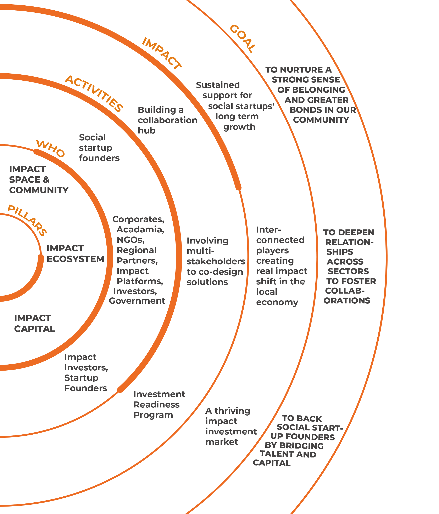

The Theory of Change (ToC):

The Theory of Change is a dynamic framework that helps organizations map out the steps needed to bring about social change.
Various resources on ToC can be found on websites like the Center for Theory of Change.
UNICEF example
Back